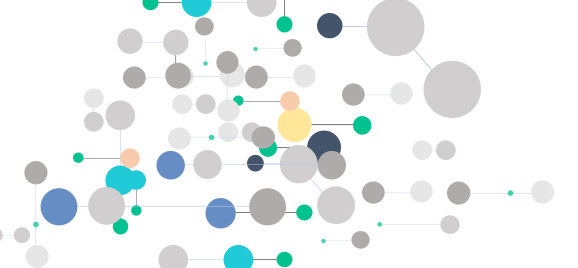

An ICD story
story of how we find true moments of individual records from the EHR with tSPM
Created May 31, 2022 - Last updated: May 31, 2022
Diagnosis records in the EHRs are known to have reliability issues due to various underlying causes.
“An EHR diagnosis record and its time stamp may not give the true disease state or the actual onset of the disease.”
Our EHR sequencing technology has shown to be able to identify the genuine moments of diagnosis records. But the problem is not an easy one to solve. The video below illustrates the problem and solution in about 2 minutes.
The sequences together create a massive feature space, creating a bottleneck for prior work in this area.
We have developed a high-throughput dimensional reduction algorithm MSMR that enables us to identify sequences of EHR records that carry useful information for downstream ML algorithms.